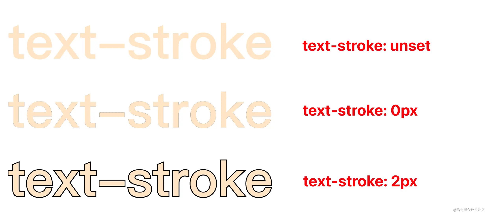
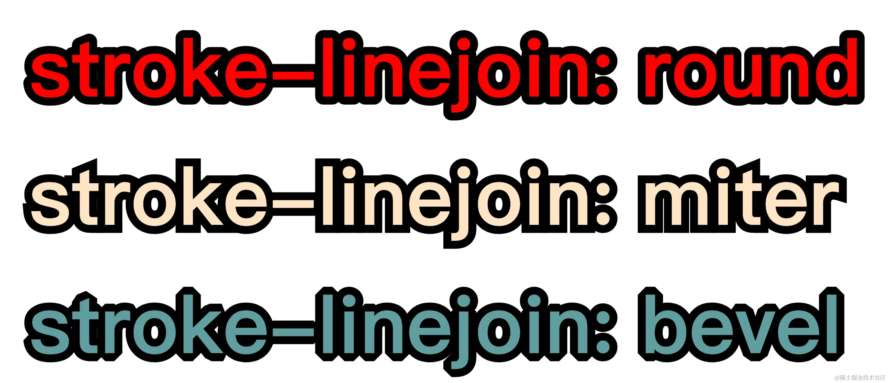
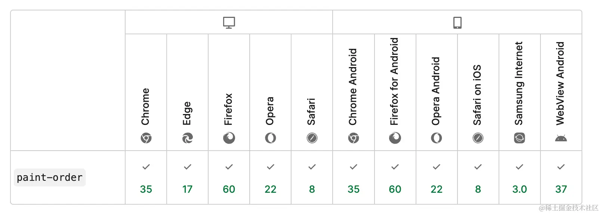

前端外描边完美实现
2023/12/24 · YinHao背景
最近在公司做画布相关的内容，涉及到了字体描边的方案选择，在三种方案对比和尝试下，最终选用了 SVG 作为字体描边的方案，今天就来讲讲这些方案的优缺点。
字体描边方案对比
1. text-stroke
优点： 实现效果好
缺点：
- 兼容性一般，需要配合
-webkit-background-clip属性来实现外描边，而市面上的截图库都不支持这个属性 😅，也就是截图后描边效果会丢失（尝试过 html2canvas、html-to-image、dom-to-image，以及公司内部的一些截图库） - 有描边吞字的现象：描边宽度变大时，描边会向内扩展把文本覆盖，
- 宽度为 0px 的时候也依旧存在描边
效果：

2. text-shadow
优点： 兼容性好
缺点： 实现效果不好，怎么说呢，很难评，有种锯齿的美，毕竟人家不是干这行的 😅
效果：

3. SVG
优点： 兼容性好、实现效果好，整体上看比 text-stroke 效果还要好
缺点： iOS 上同样存在描边吞字的现象，但是它的缺点都可以解决，还请看下文
效果：

4. Canvas
优点： 兼容性好
缺点：
- 字体整体比较模糊
- 有描边吞字的现象
- 需要通过 canvas api 来进行绘制
效果：

调试
上面四种方案都可以在 CodeSandBox 中自行尝试一下：
SVG 实现字体描边
通过 svg 的 paint-order 来实现字体描边，兼容性最好，并且实现效果也很不错，基本兼容市面上所有浏览器，并且截图库基本都支持这个属性，下面就来讲讲 SVG 字体描边方案的实现：
<svg xmlns="http://www.w3.org/2000/svg" width="400" height="200">
<text x="0" y="0" alignment-baseline="text-before-edge" text-anchor="start">
字体描边
</text>
</svg>
text {
font-size: 50px;
font-weight: bold;
stroke: red;
stroke-width: 4px;
paint-order: stroke;
}
通过 stroke-linejoin 属性，可以 对 svg 的描边有更灵活的控制：

但是在 iOS 中，使用 paint-order 有一个坑：当 stroke-width 被设置成不同值的时候，描边有可能向文字内部扩展，导致字体被吞没，最终字体的颜色变成跟描边的颜色一致。
解决这个问题当然也有一个办法：使用 svg 的 tspan
tspan 可以控制一个 text 标签中多行文本的展示，通过设置 dx、dy 属性来控制与上一个 tspan 的距离。那么对于 iOS 描边展示异常这个问题，我们就有了一个解决办法：
text内添加两个tspan- 第一个
tspan用来控制描边展示，设置 stroke-width - 第二个
tspan用户展示字体主体，覆盖在第一个tspan上面（设置dx="0" dy="0"）
<svg xmlns="http://www.w3.org/2000/svg" width="400" height="200">
<text>
<tspan
x="0"
y="0"
style="stroke-width: 5px"
alignment-baseline="text-before-edge"
text-anchor="start"
>
文本
</tspan>
<tspan
dx="0"
dy="0"
alignment-baseline="text-before-edge"
text-anchor="start"
>
文本
</tspan>
</text>
</svg>
兼容性如下：

总结
- 整体上来看，通过 SVG 实现字体描边比其他三种方案效果都要好，并且兼容性也不错；
- 同时，
tspan可以控制text中的文本换行，通过tspan可以解决字体被描边覆盖的问题